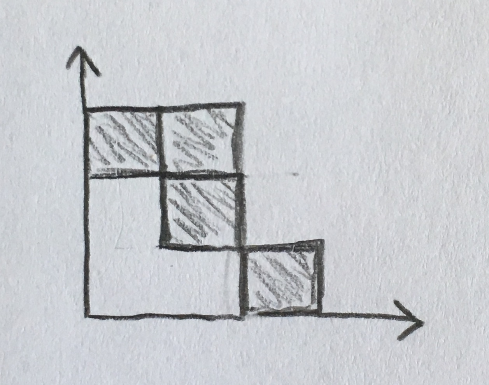
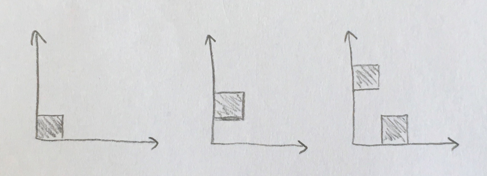

Strong Marked Tableau¶
Sage has have a builtin StrongTableau object. This module contains useful functions pertaining to Standard Marked Tableau (SMT), the most standard form of a StrongTableau (a strong tableau with standard weight).
AUTHORS:
- George Seelinger (2018): Initial version
- Matthew Lancellotti (2018): End core to strong marked tableaux
REFERENCES:
-
strong_marked_tableau.end_core_to_marked_core_sequences(end_core, k, row_markings)[source]¶ Return the set of core sequences marked by
row_markingsending inend_core.INPUTS:
end_core– a \(k+1\)-corek– All of the cores in the core sequences are \(k+1\)-cores.row_markings– vector of row-indices indicating the rows of the markings for each core sequence. (Note that “markings” are row-col-coordinates, while “row_markings” are merely row-coordinates.)
OUTPUTS:
- A set of all possible core sequences that end in
end_coreand can be marked by the row marking vectorrow_markings.
EXAMPLES:
sage: end_core_to_marked_core_sequences([5, 3, 1], 2, [0, 1, 2, 0, 1]) {([], [1], [1, 1], [2, 1, 1], [3, 1, 1], [5, 3, 1])} sage: end_core_to_marked_core_sequences([5, 3, 1], 2, [1]) {([3, 1, 1], [5, 3, 1]), ([4, 2], [5, 3, 1])}
See also
-
strong_marked_tableau.end_core_to_strong_marked_tableaux(end_core, k, row_markings)[source]¶ Return the set of strong marked tableaux marked by
row_markingsending inend_core.INPUTS:
end_core– a \(k+1\)-corek– All of the cores in the core sequences are \(k+1\)-cores.row_markings– vector of row-indices indicating the rows of the markings for each core sequence. (Note that “markings” are row-col-coordinates, while “row_markings” are merely row-coordinates.)
OUTPUTS:
- A set of all possible strong marked tableau that end in
end_coreand can be marked by the row marking vectorrow_markings.
EXAMPLES:
sage: end_core_to_strong_marked_tableaux([5, 3, 1], 2, [0, 1, 2, 0, 1]) {[[-1, 3, -4, 5, 5], [-2, 5, -5], [-3]]} sage: end_core_to_strong_marked_tableaux([5, 3, 1], 2, [1]) {[[None, None, None, 1, 1], [None, 1, -1], [None]], [[None, None, None, None, 1], [None, None, -1], [1]]}
See also
-
strong_marked_tableau.is_row_markable(outer_core, inner_core, row_marking)[source]¶ Given two cores (typically consecutive cores in a core sequence), see if
row_markingis a possible row_marking ofouter_core/inner_core.EXAMPLES:
Consider the skew shape [3, 2, 2] / [2, 1] depicted
It has a marking in row 0 and row 1, but not in row 2:
sage: is_row_markable([3, 2, 2], [2, 1], 0) True sage: is_row_markable([3, 2, 2], [2, 1], 1) True sage: is_row_markable([3, 2, 2], [2, 1], 2) False
See also
{kind=link}
-
strong_marked_tableau.k_coverees(core, k, algorithm=1)[source]¶ Given a \(k+1\)-core, find all sub-\(k+1\)-cores that have \(k\)-boundary 1 less than the given.
-
strong_marked_tableau.k_marked_coverees(core, k, row_marking)[source]¶ Given a k+1-core, find all sub-k+1-cores that have k-boundary 1 less than the given with the given row_marking.
INPUTS:
core– a \(k+1\)-corek– an integerrow_marking– The desired row marking for the covers
OUTPUTS:
The set of all \(k+1\)-cores \(\lambda\) that satify:
coreis a cover of \(\lambda\)- The skew shape
core/ \(\lambda\) has a marking in the row indexedrow_marking.
EXAMPLES:
sage: k_marked_coverees([6, 4, 2, 2, 1], 5, 0) {[5, 4, 2, 2, 1]} sage: k_marked_coverees([6, 4, 2, 2, 1], 5, 1) {[6, 2, 2, 2, 1], [6, 3, 2, 2]} sage: k_marked_coverees([6, 4, 2, 2, 1], 5, 2) {} sage: k_marked_coverees([6, 4, 2, 2, 1], 5, 3) {[6, 4, 2, 1, 1]} sage: k_marked_coverees([6, 4, 2, 2, 1], 5, 4) {[6, 3, 2, 2]}
-
strong_marked_tableau.row_marking_to_marking(outer_core, inner_core, row_marking)[source]¶ Convert a row marking to a marking.
Given the skew shape defined by
outer_coreandinner_core, and the row indexrow_markingwhere a marking exists, return the marking \((\text{marking row index}, \text{marking column index})\).Note that \(\text{marking row index}\) mentioned above is simply
row_marking. Therefore, the real usefulness of this function is that it finds the column index of the marking.EXAMPLES:
The skew shape [3, 2, 2] / [2, 1] depicted by
has the marking \((0, 2)\) in row \(0\). Hence:
sage: row_marking_to_marking([3, 2, 2], [2, 1], 0) (0, 2)
It also has the marking \((1, 1)\) in row \(1\). Therefore:
sage: row_marking_to_marking([3, 2, 2], [2, 1], 1) (1, 1)
It has no marking in row \(2\), so:
sage: row_marking_to_marking([3, 2, 2], [2, 1], 2) Traceback (most recent call last): ... ValueError: no such row marking
See also
-
strong_marked_tableau.row_markings_to_markings(core_sequence, row_markings)[source]¶ Given a
core_sequenceand correspondingrow_markingsfor each cover of the sequence, convert the row markings to markings and return them.Each row marking in
row_markingsis merely the row index of where the marking occurs. The purpose of this function is to convert each row marking to a “marking” which includes the column index. In order to understand this function, it is best to understandrow_marking_to_marking()first.EXAMPLES:
Consider the core sequence ([], [1], [1, 1], [2, 1, 1]) which corresponds to the sequence of skew shapes
Now consider the row markings 0, 1, and 2, respectively. Pair each skew shape up with its respective row marking, and then convert the row marking to a marking. Row marking 0 corresponds to marking \((0, 0)\), row marking 1 corresponds to marking \((1, 0)\), and row marking 2 corresponds to marking \((2, 0)\):
sage: row_markings_to_markings(([], [1], [1, 1], [2, 1, 1]), [0, 1, 2]) [(0, 0), (1, 0), (2, 0)]
Similarly:
sage: row_markings_to_markings(([], [1], [1, 1], [2, 1, 1]), [0, 1, 0]) [(0, 0), (1, 0), (0, 1)]
See also
{kind=link}